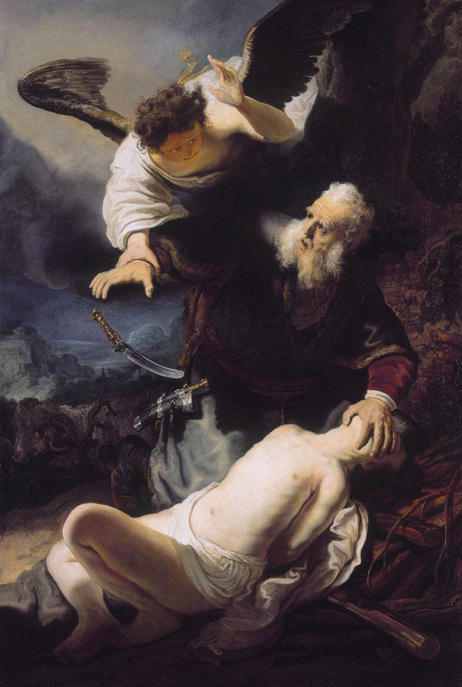

The Author of Salvation
Every Story Points to Him
And being made perfect, he became the author of eternal salvation unto all them that obey him.
Hebrews 5:9

The talks
- Office Hebrews 2:10, 5:9, and 12:2. He is called the author, the captain, the finisher. Tell us the difference between writing a thing and delivering it, and which one this title claims.
- Restoration 2 Nephi 11:4, Mosiah 13:27-33, Alma 25:15-16, and Jacob 4:5. The Book of Mormon states outright what the Old Testament only performs, that the whole law was given to point forward. Show us the difference that makes for a reader.
- Text Genesis 22:1-14, Abraham and Isaac on Moriah, read alongside Jacob 4:5, "it was a similitude of God and his Only Begotten." Work the details: three days, the wood carried by the son, the ram caught in a thicket, the name of the place.
- World The Passover as it was actually kept. Exodus 12, the lamb chosen on the tenth and killed on the fourteenth, without blemish, no bone broken, the blood on the two side posts and the upper door post. Find out what a family in Jerusalem did with the animal.
- Witness Abraham, walking three days to Moriah. He had waited a hundred years for this son. Take him through the questions on the facing page, and do not resolve what the text leaves unresolved.
- Objection That typology is a trick, that Christians read Christ backward into stories that never meant him. Answer it, and use Luke 24:27 and 44 and John 5:46 when you do.
The title
Hebrews gives the Savior three related names in three places, and the King James translators rendered the same underlying idea three ways. In Hebrews 2:10 he is the captain of our salvation. In 5:9 he is the author of eternal salvation. In 12:2 he is the author and finisher of our faith. The Greek word behind captain and author is archegos, which means the one who goes first and opens the way, the founder of a thing who is also its leader. It is a word you would use for the man who founded a city, not the man who was hired to run it. That is the claim this cohort works on. The plan of salvation was not something handed to him to administer. He wrote it, and then he walked into it first. And notice what Hebrews 5:9 says just before the title: "being made perfect." The author finished his own book by living it. That is why this cohort takes the Old Testament stories, because if he wrote the plan, then the stories God gave Israel for two thousand years were written by the same hand and were about him from the beginning.
Required reading, for every speaker in this cohort
- Genesis 22:1-14
- Exodus 12:1-14
- 2 Nephi 11:4 and Mosiah 13:27-33
- Jacob 4:4-6
- Hebrews 2:10, 5:7-9, 12:2
Questions for thought
- Isaac carried the wood up the mountain himself. List every other detail in Genesis 22 that lines up with the crucifixion, and then list the ones that do not line up. What do you do with the second list?
- Exodus 12:46 says not a bone of the Passover lamb shall be broken. John 19:36 quotes it. Why did John think that detail was worth stopping the narrative for?
- 2 Nephi 11:4 says all things given of God from the beginning are the typifying of him. All things is a strong claim. Test it on a story that does not obviously fit.
- What is the difference between a type and a coincidence? How would you tell them apart?
- In Luke 24 the risen Lord walks two disciples through Moses and all the prophets and shows them the things concerning himself. Why did they need that explained after they had already seen him?
- The lamb was chosen four days before it was killed and lived with the family in the meantime. Why do you think the law required that?
- Abraham was told to sacrifice the son through whom the promise was supposed to come. What does obedience mean when the command appears to cancel the promise?
- Hebrews says he was "made perfect." He was already sinless. What is being added?
- Where in your own life have you been given a story before you were given its meaning?